Gallery
This gallery presents a showcase of the possibilities of fractalshades. The images are auto-generated from the examples source code, to keep both the running time and the size of the documentation acceptable we limit the images quality here. Download and run the file with higher quality !
(Click on an image to see the source code)
Batch mode gallery
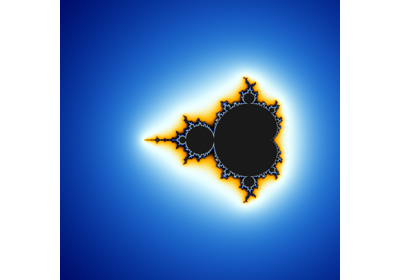
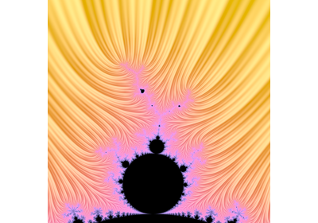
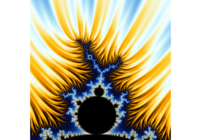
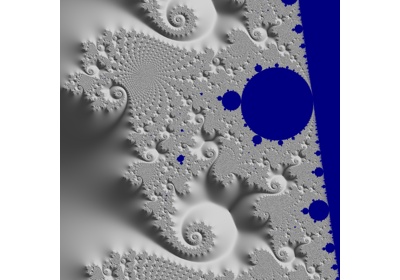
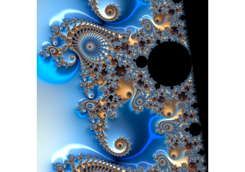
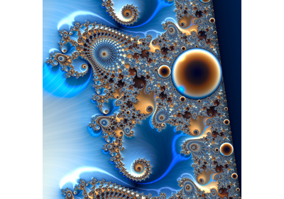
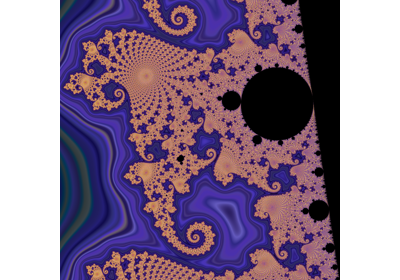
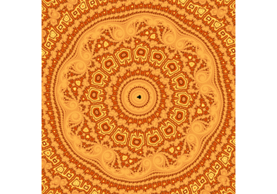
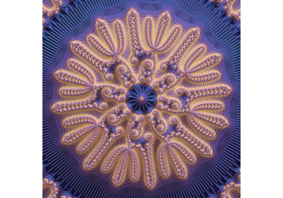
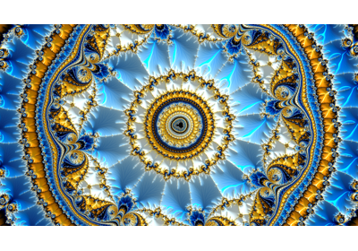
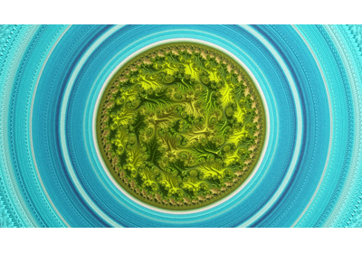
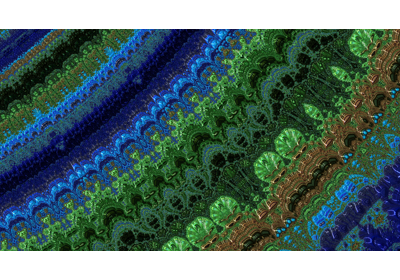
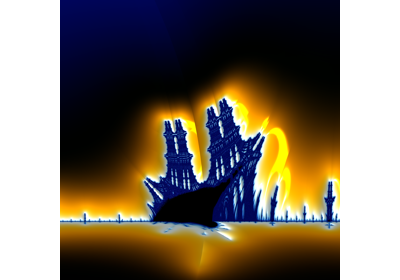
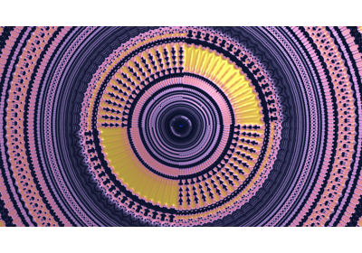
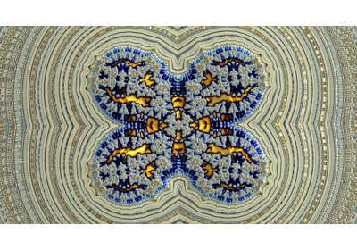
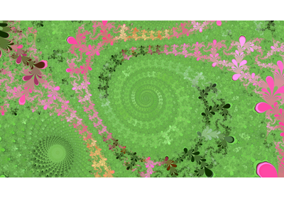
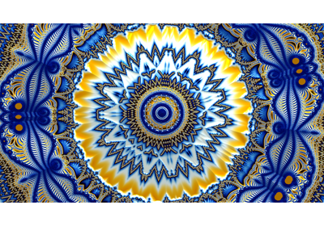
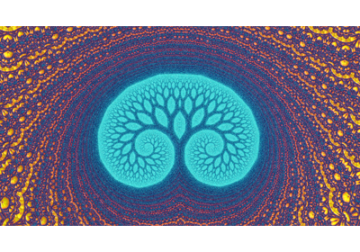
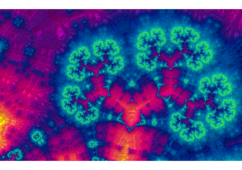
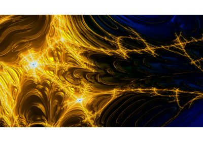
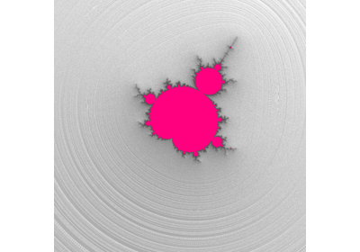
Colormaps template gallery
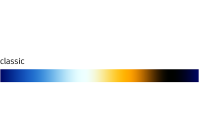
GUI-mode: arbitrary precision implementations
Below is a selection of scripts to start exploring fractals with arbitrary precision, through a graphical user interface.
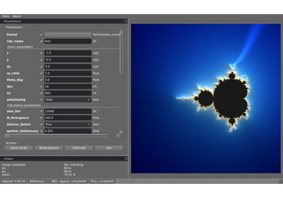
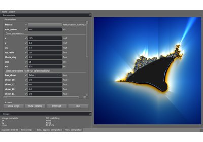
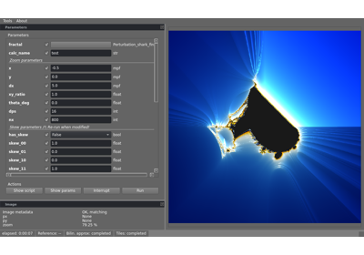
GUI-mode: standard implementation examples
Below is a selection of scripts to start exploring fractals with a standard mode (zoom depth limited to precision of double, around 1e-13) with a graphical user interface.
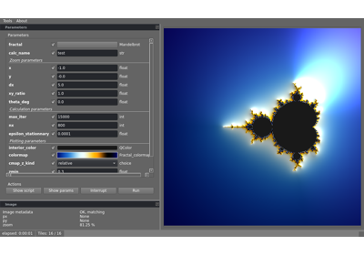
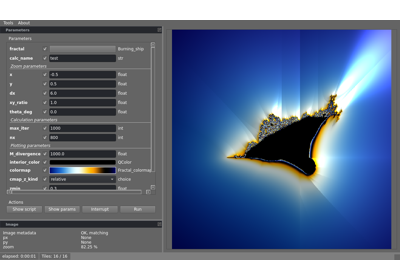
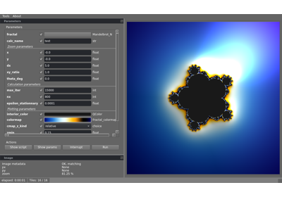
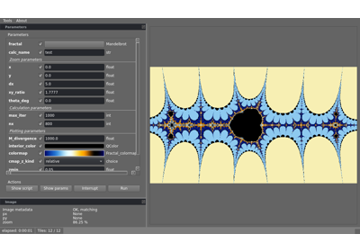
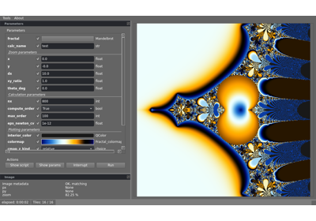
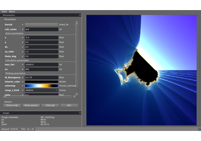